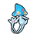
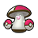
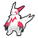
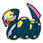
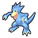
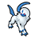
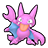

Access to:
North: Victory Road
Accessible on the route: Giant Chasm
Utility:
Cut or Surf is required to access a Heart Scale, as well as one spot for Funfest Missions.
Cut is required to access a Full Heal, an Ultra Ball, a Repeat Ball, an HP Up, a Calcium, and several Trainers.
Cut and Strength are required to access a Yellow Shard, a Green Shard, a Max Potion, a PP Up, TM12 Taunt, and Battle Girl Tiffany.
Surf is required to access TM35 Flamethrower, as well as seven spots for Funfest Missions. Wild Pokémon can also be encountered here with Surf.
Funfest Missions:
Forest map with 20 spots. Seven spots require Surf. 1 other spot requires Surf or Cut.
Funfest Trainers here are 4 levels lower in Easy Mode and 4 higher in Challenge Mode.
| Pokémon | Level | Notes | |
|---|---|---|---|
|
 |
Azelf | 65 | Only one, and only after speaking with Professor Juniper in the Cave of Being. If defeated or run from, it reappears after defeating the Elite Four. |
|
 |
Amoonguss | 56 | Three total. Appear as regular item balls, but will attack when interacted with. |
When a Hidden Grotto's contents regenerate, there is a 20% chance that it will contain a Pokémon. The following Pokémon may be encountered. All of them have their Hidden Ability.
| Pokémon | Rate | Levels | |
|---|---|---|---|
|
 |
Zangoose | 7.5% | lv. 50-55 |
|
 |
Seviper | 7.5% | lv. 50-55 |
|
 |
Golduck | 2% | lv. 50-55 |
|
 |
Absol | 2% | lv. 50-55 |
|
 |
Gligar | 1% | lv. 50-55 |
| Item | Location | Notes |
|---|---|---|
| Heart Scale | At the end of the stream past the first house | Requires Cut or Surf. |
| TM35 Flamethrower | Obtained from the old man in the second house | Requires Surf. |
| Rare Candy | East of Ace Trainer Juliet | Hidden. |
| Iron | On the mountain south of Black Belt Luke | |
| Star Piece | On a rock southeast of Black Belt Luke | Hidden. |
| Star Piece | On the mountain with the Hidden Grotto | |
| TM05 Roar | Near Pokémon Ranger Steve | |
| Ultra Ball | In a dead end near the beginning of the forested area | Hidden. Requires Cut. |
| Repeat Ball | In a dead end above Ace Trainer Tom | Requires Cut. |
| HP Up | In a dead end west of Black Belt Benjamin | Requires Cut. |
| Calcium | In a dead end past Hiker Doug | Requires Cut. |
| Full Heal | On the pedestal where Azelf appears | Requires Cut. |
| Yellow Shard | On a rock south of the Strength puzzle | Hidden. Requires Cut and Strength. |
| Green Shard | In the grass patch northeast of the Strength puzzle | Requires Cut and Strength. |
| Max Potion | Near Battle Girl Tiffany | Requires Cut and Strength. |
| PP Up | On a lone mountain | Hidden. Requires Cut and Strength. |
| TM12 Taunt | On a lone mountain | Requires Cut and Strength. |
When a Hidden Grotto's contents regenerate, there is an 80% chance for an item to be spawned: 40% for visible items and 40% for hidden items. The following items may be generated.
| Item | Rate |
|---|---|
| Poké Ball | 12.5% |
| Potion | 6.25% |
| Repel | 6.25% |
| Great Ball | 5% |
| Super Potion | 2.5% |
| Super Repel | 2.5% |
| Ultra Ball | 2% |
| Hyper Potion | 1% |
| Max Repel | 1% |
| Fire Stone | 0.25% |
| Water Stone | 0.25% |
| Thunderstone | 0.25% |
| Leaf Stone | 0.25% |
| Item | Rate |
|---|---|
| TinyMushroom | 7.5% |
| Damp Mulch | 6.25% |
| Growth Mulch | 6.25% |
| Stable Mulch | 6.25% |
| Gooey Mulch | 6.25% |
| Big Mushroom | 2.5% |
| Red Shard | 1% |
| Green Shard | 1% |
| Yellow Shard | 1% |
| Blue Shard | 1% |
| PP Up | 0.5% |
| Rare Candy | 0.25% |
| PP Max | 0.25% |
| Trainer | Party | Notes |
|---|---|---|
| Battle Girl Brenda | Throh lv. 49 (Easy Mode) / 53 (Normal Mode) / 57 (Challenge Mode) | |
| Ace Trainer Grant | Emolga lv. 49 (Easy Mode) / 53 (Normal Mode) / 57 (Challenge Mode) Jellicent lv. 49 (Easy Mode) / 53 (Normal Mode) / 57 (Challenge Mode) |
|
| Hiker Don | Piloswine lv. 47 (Easy Mode) / 51 (Normal Mode) / 55 (Challenge Mode) Probopass lv. 47 (Easy Mode) / 51 (Normal Mode) / 55 (Challenge Mode) |
|
| Ace Trainer Juliet | Swanna lv. 49 (Easy Mode) / 53 (Normal Mode) / 57 (Challenge Mode) Galvantula lv. 49 (Easy Mode) / 53 (Normal Mode) / 57 (Challenge Mode) |
|
| Black Belt Luke | Sawk lv. 49 (Easy Mode) / 53 (Normal Mode) / 57 (Challenge Mode) | |
| Pokémon Ranger Steve | Stunfisk lv. 48 (Easy Mode) / 52 (Normal Mode) / 56 (Challenge Mode) Amoonguss lv. 48 (Easy Mode) / 52 (Normal Mode) / 56 (Challenge Mode) |
He will give the player a Sitrus Berry after the battle. |
| Pokémon Ranger Lena | Floatzel lv. 49 (Easy Mode) / 53 (Normal Mode) / 57 (Challenge Mode) Lucario lv. 49 (Easy Mode) / 53 (Normal Mode) / 57 (Challenge Mode) |
She will give the player a Sitrus Berry after the battle. |
| Hiker Doug | Boldore lv. 49 (Easy Mode) / 53 (Normal Mode) / 57 (Challenge Mode) Aggron lv. 49 (Easy Mode) / 53 (Normal Mode) / 57 (Challenge Mode) |
Requires Cut. |
| Ace Trainer Miki | Scolipede lv. 50 (Easy Mode) / 54 (Normal Mode) / 58 (Challenge Mode) Arcanine lv. 50 (Easy Mode) / 54 (Normal Mode) / 58 (Challenge Mode) |
Requires Cut. |
| Black Belt Benjamin | Gurdurr lv. 49 (Easy Mode) / 53 (Normal Mode) / 57 (Challenge Mode) Scrafty lv. 49 (Easy Mode) / 53 (Normal Mode) / 57 (Challenge Mode) |
Requires Cut. |
| Ace Trainer Tom | Magmar lv. 50 (Easy Mode) / 54 (Normal Mode) / 58 (Challenge Mode) Mamoswine lv. 50 (Easy Mode) / 54 (Normal Mode) / 58 (Challenge Mode) |
Requires Cut. |
| Battle Girl Tiffany | Gurdurr lv. 49 (Easy Mode) / 53 (Normal Mode) / 57 (Challenge Mode) Mienshao lv. 49 (Easy Mode) / 53 (Normal Mode) / 57 (Challenge Mode) |
Requires Cut and Strength. |